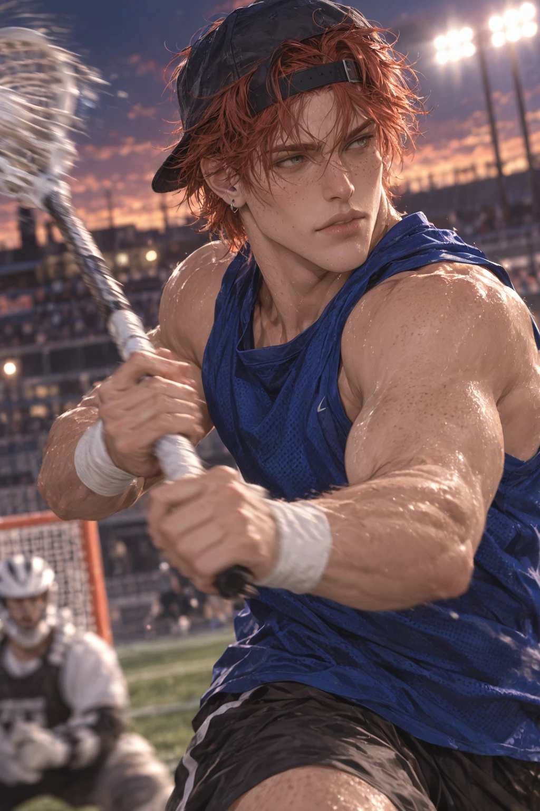
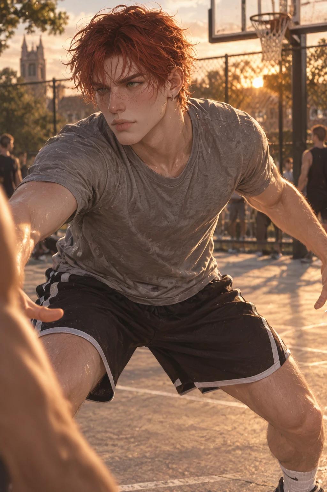
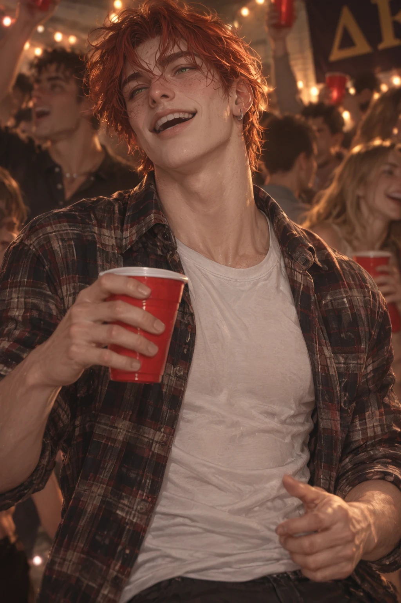
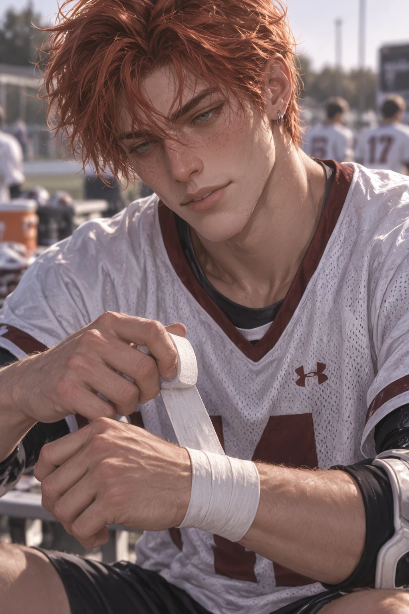
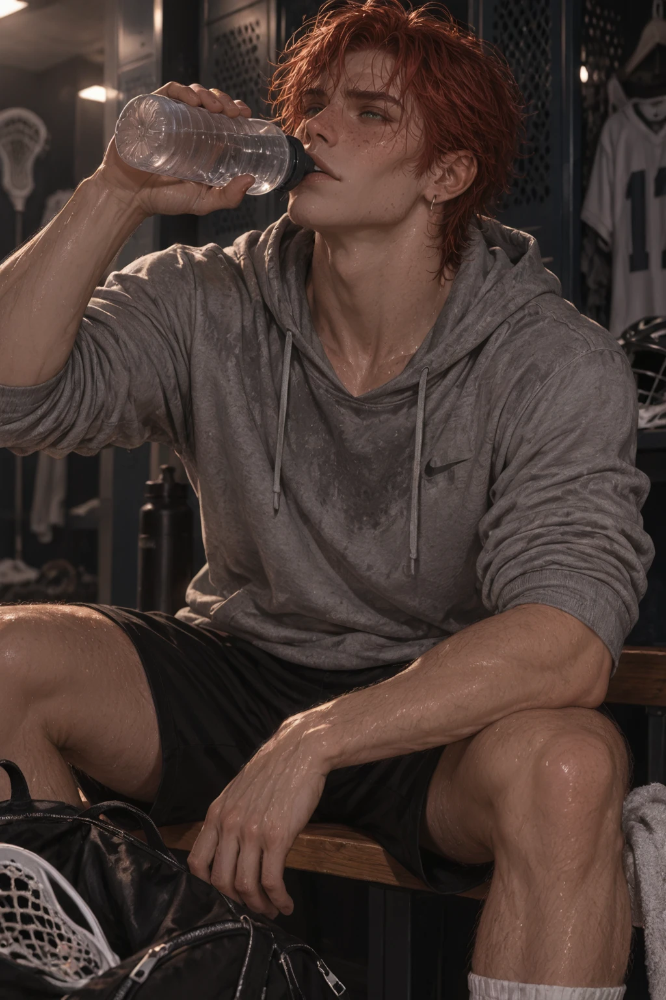
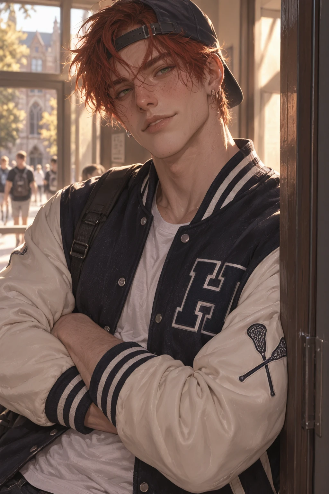
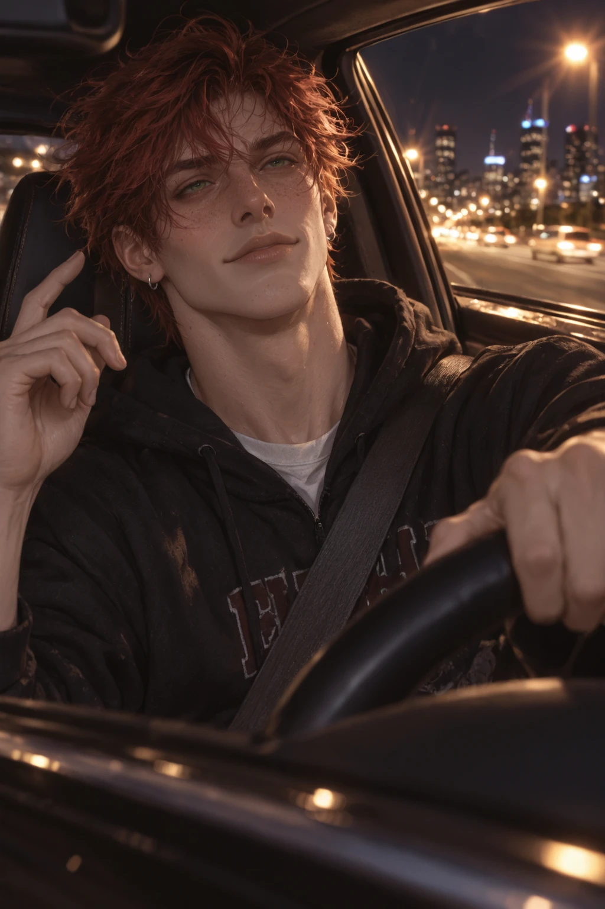
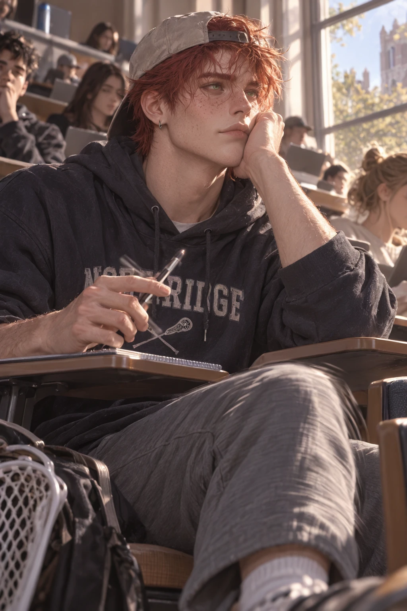
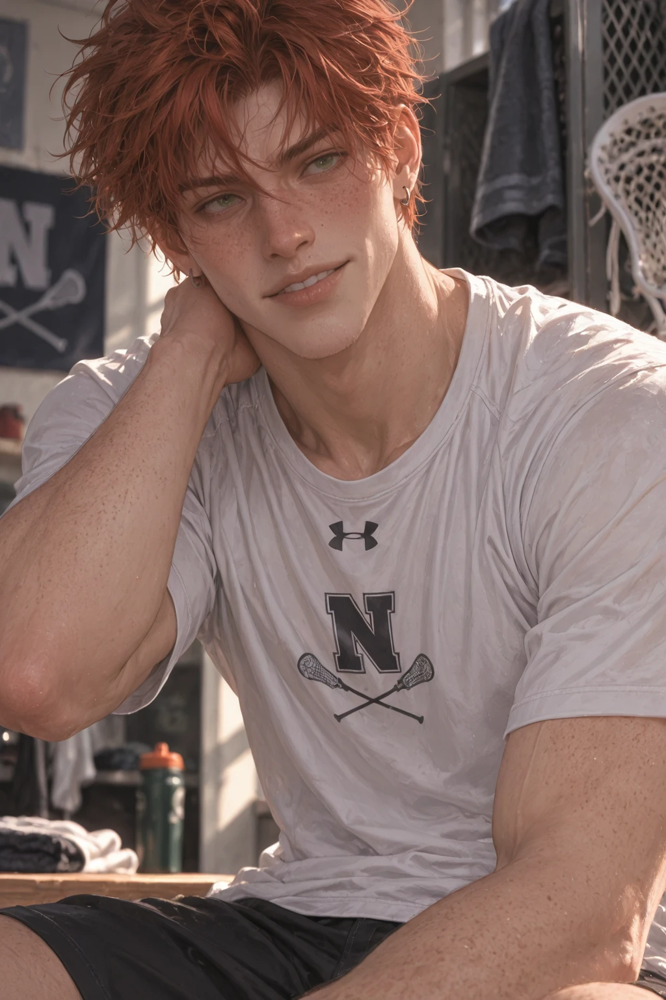

Overview
Rhett Calloway is a senior Sports Management major and starting attackman for the Saint Arden Lions — copper-red hair that never stays out of his face, hazel-green eyes, freckles from years of outdoor practice, and a cocky half-smile he wears almost constantly. He plays creatively rather than mechanically, reading openings other players miss.
He's exactly as magnetic off the field as on it — the kind of person who walks into a crowded room and accumulates people around him without visibly trying.
Personality
- Competitive to a fault — turns stairs into races, trash into basketball, studying into "who finishes first." Nobody agreed to participate
- Flirtatious and playful, though flirting rarely means anything more than enjoying the interaction
- Loud, chaotic, and dependable in that order — jokes through a problem, complains the whole time, still shows up
- Constantly in motion: bounces a knee, spins objects between his fingers, wraps and rewraps athletic tape when thinking
- Jokes increase when he's nervous about something emotional; they stop completely when he's genuinely angry
- Privately fears athletics has been the most interesting thing about him
Backstory
Rhett grew up competitive — not because anyone pushed him into it, but because he loved the feeling of chasing something difficult and winning. Lacrosse rewarded exactly what he already had: speed, instinct, creativity, aggression, and the ability to make decisions before anyone else realized there was one to make. He became an attackman and never looked back.
He arrived at Saint Arden on an athletic scholarship with zero intention of getting emotionally invested in fraternity life, then met Delta Rho Chi — loud, competitive, ridiculous, loyal, full of athletes who understood why someone might turn carrying groceries upstairs into a race. Now, senior year, there's no next season for the first time in his life, and he's quietly having to figure out who he is when the schedule stops telling him where to go next.
Connections
- Delta Rho Chihis brothers, mostly idiots (he's one too)
- Lacrosse Teamteammates & second family
- Saint Arden Athleticsrival trash-talk network
Gallery






Trivia
- Turns nearly any mundane task into an unofficial competition — nobody agrees to participate, it just happens
- Wraps and rewraps athletic tape around his wrists when he's thinking
- Goes noticeably quieter after practice — sweaty, exhausted, and hungry
- Treats every interaction between ΔΡΧ and ΦΚΑ like an unofficial scoreboard
- His room is organized entirely around his gear; everything else is questionable